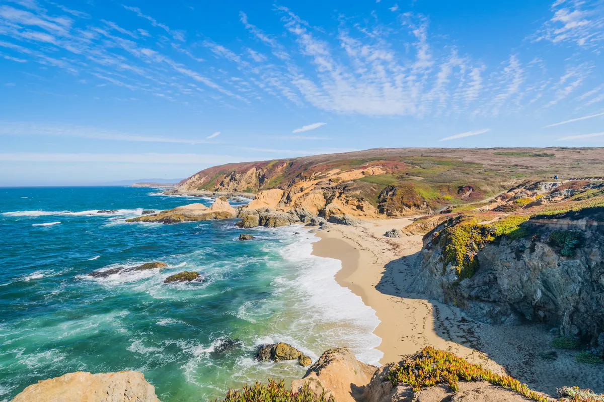

For many Northern California families, the start of Dungeness crab season is a holiday tradition in its own right. This year the season comes with some changes. Recreational crabbing opens along most of the California coast on Saturday, November 7, 2026, but crab traps are restricted to protect whales, and the commercial season is on hold until at least January 1, 2027. Here is what that means if you are planning a trip to the Sonoma Coast from Santa Rosa.
When does Dungeness crab season open in 2026?
The California Department of Fish and Wildlife (CDFW) announced on October 30, 2026 that the recreational Dungeness crab fishery opens on November 7, 2026 in most areas, under trap restrictions. Those restrictions cover the whole coast from the California/Oregon border to Point Conception, Fishing Zones 1 to 5, and last until at least January 1, 2027.
CDFW says the restriction and the commercial delay are required because of the number of humpback whale entanglements during the 2026 calendar year. Jefferson Public Radio reported that at least five whales have been confirmed entangled in California Dungeness crab gear this year, and that this is the seventh straight year the season has been delayed.
What gear can you use?
The trap restriction applies to crab traps, the pots with lines running from the seafloor to a surface buoy. It does not stop you from crabbing. According to CDFW:
- Hoop nets and crab snares (also called loop traps) are allowed and are not affected by the trap restriction.
- Hoop nets must be serviced every two hours and cannot be left unattended for longer.
- A crab trap validation is only needed if you use crab traps. Hoop nets, crab loop traps and taking crab by hand do not require one.
- A fleet advisory is in place for all zones: avoid setting any gear where whales are present.
Bag limits, minimum sizes and license rules are set in CDFW's ocean sport fishing regulations. Check them on the CDFW website before you go, and remember that anyone taking invertebrates with a size limit must carry a device that can measure the minimum legal size.
Is Sonoma County affected by the domoic acid delay?
State health agencies found unhealthy levels of domoic acid in crab collected north of Fort Bragg, so the season is delayed between Cape Mendocino and the Ten Mile State Marine Reserve, in southern Humboldt and northern Mendocino counties. Recreational take and possession of Dungeness crab is prohibited in those waters until health officials say the risk has passed.
That closed stretch is well north of the Sonoma Coast, where the November 7 opening applies with the trap restriction. Conditions can change during the season, so check CDFW's domoic acid information line at (831) 649-2883 before a trip.

When will commercial crab be back on menus?
The commercial Dungeness crab season is delayed from the Oregon border to Point Conception until at least January 1, 2027. CDFW says the delay also lets whales migrate out of California waters before the commercial fishery opens.
CDFW expects its next risk assessment in mid-December, to inform a possible opening of the commercial fishery and a lifting of the recreational trap restriction around the new year. If you have your heart set on local, commercially caught crab for a holiday dinner, plan on January at the earliest, and ask the restaurant where its crab comes from.
Make a coast day of it
A crabbing trip pairs naturally with the rest of the coast, and in winter it can double as a whale-watching morning. Our whale watching guide covers Bodega Head and the best shore lookouts, and our Santa Rosa itinerary has more coast and redwood day trips.
Back in town, our downtown food guide has ideas for dinner once you are off the water.
Good to know
- Recreational Dungeness crab opens November 7, 2026 in most areas.
- Crab traps are restricted statewide until at least January 1, 2027. Hoop nets and crab snares are allowed.
- Hoop nets must be checked every two hours.
- The commercial season is delayed until at least January 1, 2027, with a risk assessment expected in mid-December.
- Check CDFW for bag limits, size limits and license rules before you go.
Stay in Santa Rosa, crab on the coast
Santa Rosa puts the coast within an easy drive, with a real downtown to come back to after a cold morning on the water. Hotel E sits in a historic building on Old Courthouse Square, with continental breakfast before an early start, an evening happy hour and valet parking. Art House Santa Rosa is a few blocks away on 7th Street. Either one makes a comfortable base for crab season.
Plan your stay downtown
Browse hotels, restaurants, wineries and attractions, all in one place.
Open the directory